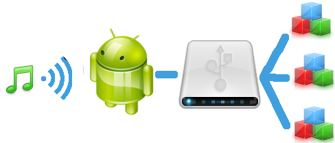
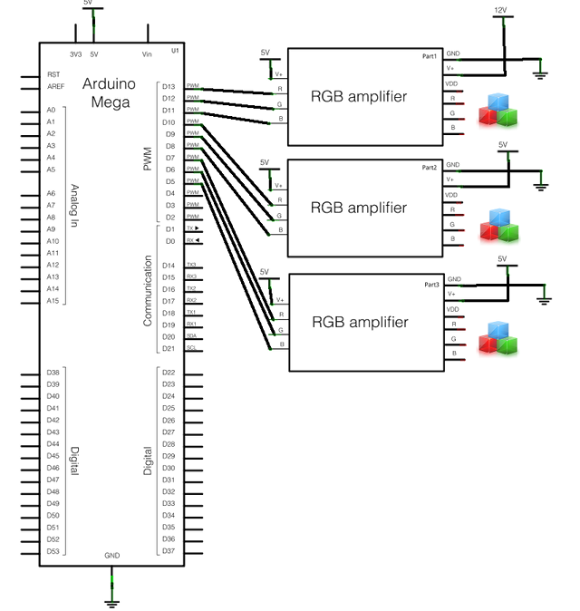

Michal Harakal, July 2011
led-o-matic adk is music-to-colour light converter. It consist of 3 basic parts:
An Android device (phone or tablet) with Android Open Accessory support records music over device's microphone. It analyses the sound's spectrum in a real time and calculates the desired colour for 3 bandwidth areas. The desired colour is sent with generic protocol (firmata) over a USB cable to the light unit, which physically controls LED RGB stripes. Light unit can control the intensity of the every colour on the every channel with 9 PWM outputs on Android Open Accessory Development Kit, so you can get 3 various colours on 3 LED RGB stripes.

led-o-matic adk is an extension to the already existing and running device led-o-matic http://ledomatic.com. The device was built in autumn 2010 on barcamp on Google Developer Days in Munich.

Android device takes care of sound recording, audio signal analysis, on device visualisation and communication with the light unit over an open accessory protocol.
// src: http://stackoverflow.com/questions/5774104/android-audio-fft-to-retrieve-specific-frequency-magnitude-using-audiorecord int channel_config = AudioFormat.CHANNEL_CONFIGURATION_MONO; int format = AudioFormat.ENCODING_PCM_16BIT; int sampleSize = 8000; int bufferSize = AudioRecord.getMinBufferSize(sampleSize, channel_config, format); AudioRecord audioInput = new AudioRecord(AudioSource.MIC, sampleSize, channel_config, format, bufferSize); // read audio
double[] audioBuffer = new short[bufferSize]; audioInput.startRecording(); audioInput.read(audioBuffer, 0, bufferSize);
Projects as inspiration:
Despite of many project I can learn and profit from, there is still enough place for innovation
(colours alignment to frequencies, visualisation, UI for tablet, etc.)
The heart of the light unit is Arduino MEGA + USB Host shield (aka Android Open Accessory Development Kit ). The most beautiful thing on this project is the generic firmata protocol. A firmata client sees the light unit as the generic "firmata" device with 9 analog outputs. Arduino IDE from the version 0022 delivers the code for firmata as an example. Just minor modifications are required to get it working with Android Open Accessory protocol.
I like to build stuff, software and hardware kind. The main motivation for the project is to test and learn Android Open Accessory and the challenge accelerated my interests. Someone who already worked on Apple's "Made For iPod" program can understand the meaning of openness. To build a nice device is the best way for "learning by doing".